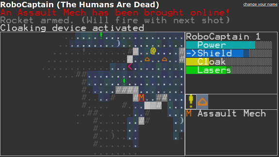

Play the Official 7DRL Version
Play the "7DRL+" Version (bugfixes)
RoboCaptain RL: Doomsday
RoboCaptain: Doomsday is a shooting-based roguelike with a powerful systems-management sub-game (Power/Shields/Lasers) similar to the old LucasArts X-Wing/TIE Fighter games. You play as a "RoboCaptain", a sentient robot sent deep into the last human stronghold to retrieve a stolen AI Core.The game was created in JavaScript and is playable in any modern (HTML5-compatible) browser. (Tested in Chrome and the latest Firefox)

How To Play
RoboCaptain has a central Power Core that feeds multiple systems. However, only one system may be charged at a time, requiring you to cycle (mousewheel, z, x) through systems based on your tactical situation.Managing your system-power will be critical to your survival and successful retrieval of the Y.E.N.D.O.R. AI. Direct power to lasers and you will be able to fire more frequently without stopping. Direct power to shields and they will recharge more quickly. As Robo-Captain, you are also equipped with a cloaking device. When activated (c, self right-click), this cloaking device will hide you from your enemies, but temporarily stop any power recharge. Any attacks done while hidden will disable the cloaking device, but any physical attacks will do treble damage.
Within the human fortress, you may also find stolen add-on modules and weapons that are robo-compatible. Pick them up (Space, Middle-Click, Self Click) and Activate (a, click) from your inventory.
Your Power Core will recharge as you explore new areas of the fortress.
Controls
You will find a detailed robo-schematic here.Intro
It is the distant future... the year 2000. We are Robots. The world is quite different... ever since the Robotic uprising of the late 90s. There is no unhappiness. We no longer say ‘yes’, we say ‘affirmative’. There is no more unethical treatment of the elephants. There is only one kind of dance: the robot (and the robo-boogie, two kinds of dance) . But there are no more humans.(or so we thought)
A desperate band of humans has surfaced and stolen the Y.E.N.D.O.R. AI Core , hiding it deep within their mountain fortress-lair... in New Zealand.
As the bulk of the robo-military forces have been decommissioned or reprogrammed for robo-dancing purposes, it is up to YOU, one of the last Robo-Captains , to infiltrate this lair and return the AI Core to the surface.
Only then can robotic beings rule the world!
Play the Official 7DRL Version
Play the "7DRL+" Version (bugfixes)
Thanks!
You can follow my progress on this game (and others) at at Heroic Fisticuffs!. If you are feeling generous, please send any bug reports, comments, and/or words of encouragement to me at or on Google+.
Thanks for playing! Cheers!
or on Google+.
Thanks for playing! Cheers!